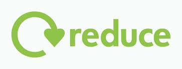
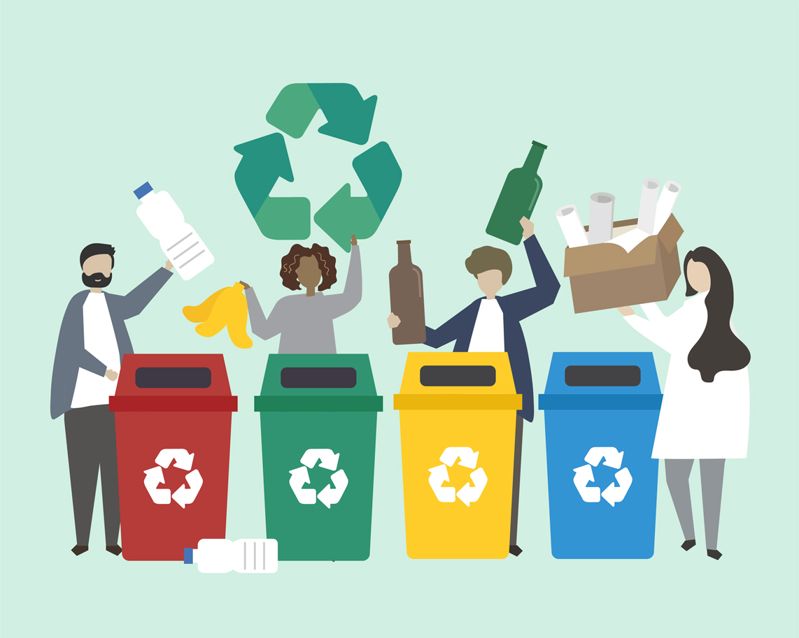
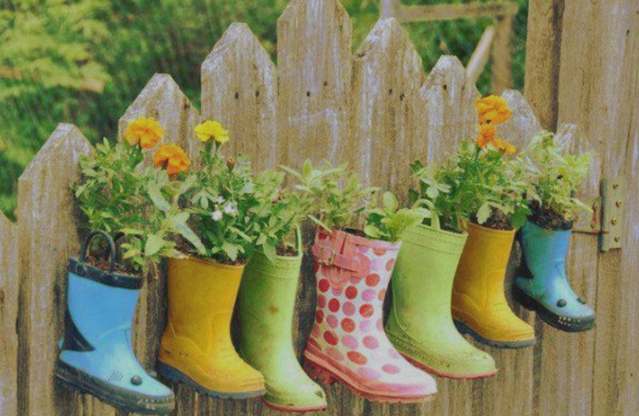

La recolección y el procesamiento de desechos de papel y cartón, vidrio o plástico supone crear nuevos productos basados en esos mismos materiales. Una nueva oportunidad para la Tierra, a la que se puede proteger si se entienden los beneficios del reciclaje, la manera correcta separar los residuos y los retos a los que se enfrenta esta actividad en los próximos años.
El reciclaje es el proceso de recolección y transformación de materiales para convertirlos en nuevos productos, y que de otro modo serían desechados como basura.
Es la acción de disminuir, simplificar o eliminar el consumo y/o uso bienes o energía. También hace referencia a las políticas creadas para llevar a cabo esta acción de forma individual o colectiva. Si los productos que utilizamos a diario y el uso de cierto tipo de combustibles generan residuos que impactan el ambiente de forma negativa, entonces es fácil deducir que al reducir su consumo, el daño que ocasionan disminuye.
La acción de reciclar consiste en procesar los desechos para convertirlos en materia prima o en nuevos productos. Si bien en muchos casos se pueden reciclar desechos completos (cajas, botellas, bolsas, empaques, vidrios, materia orgánica, etc), otras veces se puede aprovechar solo una parte de los componentes del producto. El aprovechamiento total o parcial de un bien que ya ha sido utilizado disminuye el impacto ambiental al evitar la incineración de los desechos, la contaminación de la tierra y el agua generada por la acumulación de tóxicos y el uso de energía en la creación de nuevos productos.
Esta acción tiene que ver con darle un nuevo destino a productos o bienes, bien sea con la misma finalidad para la que fueron diseñados, u otra. Al hacerlo, se disminuye la cantidad de desechos generados. El ejemplo más común de esta estrategia es la reutilización de botellas de plástico o vidrio que pueden ser reconvertidas en objetos utilitarios o decorativos. Lo mismo aplica para los muebles u objetos de madera o metal, que son reparados para crear nuevas piezas a partir de ellos. En los últimos años, algunas empresas han adoptado de manera formal o informal la norma de utilizar nuevamente el papel que ha sido impreso por una sola cara. De esta forma, se aprovechan las 2 caras de las hojas, disminuyendo no solo los desechos, sino los gastos operativos.
 Inicio Continuar